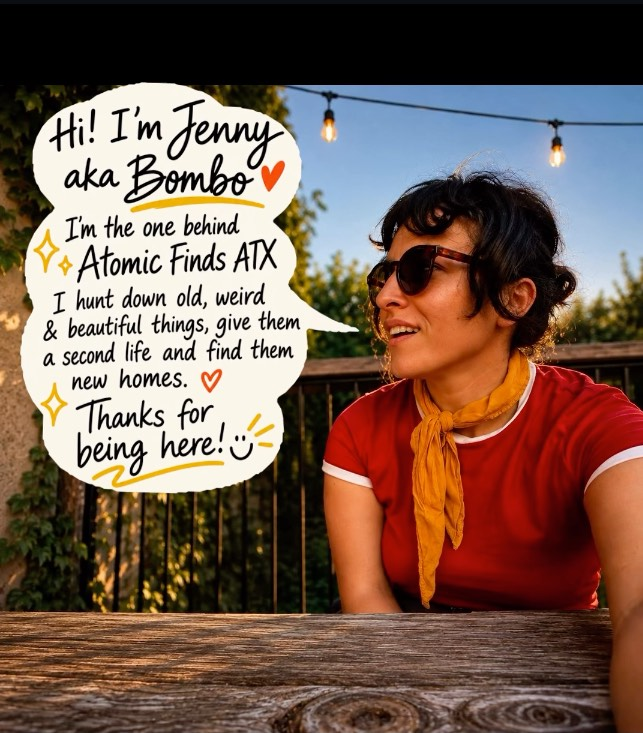

Brand Bible
ATOMIC FINDS ATX
Tiny Time Machines for Your Home
South Austin, Texas · @atomicfindsatx · August 2026
Our Story
60s–70s finds, second lives.

Jennifer Gomez hunts down old, weird & beautiful rattan and bamboo pieces around Austin, restores them, and finds them new homes. Every piece gets a name and a story before it ever gets a price tag — Meet Tropi, Meet Flora, Meet Atlas — because a Tiny Time Machine deserves a character, not a SKU.
4.8★ across 88 Facebook Marketplace reviews, with a "Highly Rated" badge earned on communication, punctuality, and honest item descriptions.
Voice & Tone
Playful, first-person, emoji-forward.
Naming pieces
"Meet Tropi 🌿 — a 1970s rattan bakers rack that's ready for her next act."
Status energy
"SOLD!!!!! 🔥 Thank you for loving Flora as much as I did."
Sourcing story
"Freshly rescued from another decade ✨ solid rattan, tight cane bindings, honey patina — passes the Atomic Standard."
#AtomicFindsATX
#VintageRattan
#BohoDecor
#AustinFinds
First-person ("I hunt down…"), never corporate "we." ALL CAPS + repeated punctuation carry the emphasis, not adjectives. One or two emoji per caption, always specific — 🔥 💚 ✨ ❤️ 🍸 🛸 — never generic.
Color Palette
Warm, sunny, retro-optimistic.
Sun Orange
#E8632F
Poppy Red
#D6412B
Avocado
#4F5E2A
Hot Pink
#EC5A93
Marigold
#E8A93E
Turquoise
#4FB6AC
Cream
#F3E7C9
Sand
#E4C9A0
Rattan Honey
#B9803F
Ink
#2B2016
Cream is the default background — never stark white or black. Orange/red lead headlines and CTAs; avocado green is secondary; pink, marigold and turquoise are accents.
Typography
Four faces, four jobs.
Bungee — headlines
Poster-style display type. Section titles.
Pacifico — wordmark
The logo script and signature callouts only.
Fredoka — subheads
Badges, buttons, UI labels, product names.
Caveat — captions
Story bubbles, personal notes, sourcing lines.
Body copy runs in Nunito. Font note: no original files were provided — these are the nearest free Google Fonts matches. Send original files if available.
Logo & Status Marks
The badge, and its stickers.
The circular badge is the only logo asset — used as-is, never redrawn. SOLD and AVAILABLE stickers are pop-art circular patches, always shown at a slight tilt over product photos.
Material Philosophy
Stewardship, not just decor.
Every Tiny Time Machine carries the craftsmanship of the artisans who wove it. Buying vintage breaks the wild-harvest cycle and honors that labor — worth a sentence in "Behind the Find" stories, not a lecture.
Rattan
Solid-core climbing palm vine. Heavy, dense, bends into curved frames.
Bamboo
Hollow-core grass. Rigid, straight, smooth segmented nodes.
Wicker
Not a material — a weaving technique using cane, reed or rattan peel.
Weight test
Solid & heavy. Light/hollow means a modern replica.
The bindings
Tight leather/cane/rattan-peel wraps — never nailed or glued.
The patina
Warm honey-toned amber oxidation, decades in the making.
UI Components
Buttons, badges, cards.
DM to shop
Save find
Available
Sold
Meet Atlas
1960s hexagonal rattan side table
$95
Pill shapes, thick soft borders, warm sticker shadows — never sharp corners, never flat black shadows.
Thank you 🛸
@atomicfindsatx · South Austin, TX · DM to shop